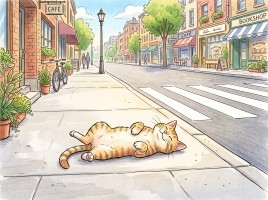
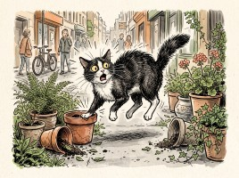

長年深耕地方基層與法案政策研究，從立法院黨團法案助理到台北市議會研究室法案主任,柏勛始終站在監督權力、推動改革的第一線。
我們不只談理想，更拿出專業的法案與監督行動。面對行人地獄、公共工程瑕疵與行政濫權，我們挺身而出，為市民討回應有的公道與安全環境。
結合過往倡議與實戰經驗，打造永續、安全、透明的台北市。
觀看柏勛的政策短講、街頭觀察與改革理念。
絕不妥協的監督實錄與法案倡議
針對地方公共工程與富民生態公園開發案中的行政疏漏與弊端提出檢舉與公開監督。
揭發市府高層公務員利用公家資源及上班時間操作網軍輿論爭議，拒絕市政機器「武器化」，行為人劉玉華至今還無道歉。
今天的富錦一號公園，有滿滿的不定芽，長成枝條了，更危險。因為「不定芽」，與母幹的連結較弱，更容易在風災中斷裂掉落。
點擊轉動轉盤，看看你今天在台北街頭能抽到什麼運勢！

✨ 大吉 - 反攻大路順到家

⚠️ 大凶 - 步步危機要小心
改革需要您的支持，讓我們一起改變松山信義！
掌握最新法案倡議、地方行程與街頭監督進度，不錯過任何關鍵改革時刻。
拒絕財團綁架，乾淨選舉需要小額公民力量支持。歡迎點擊下方了解合法政治獻金捐款專戶資訊。